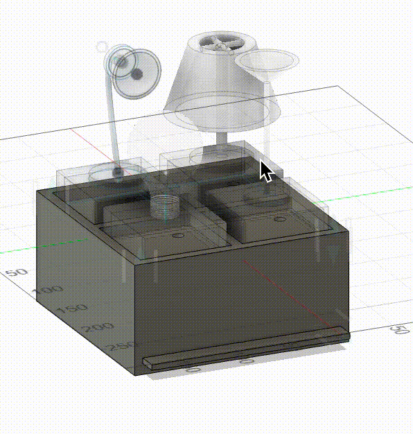
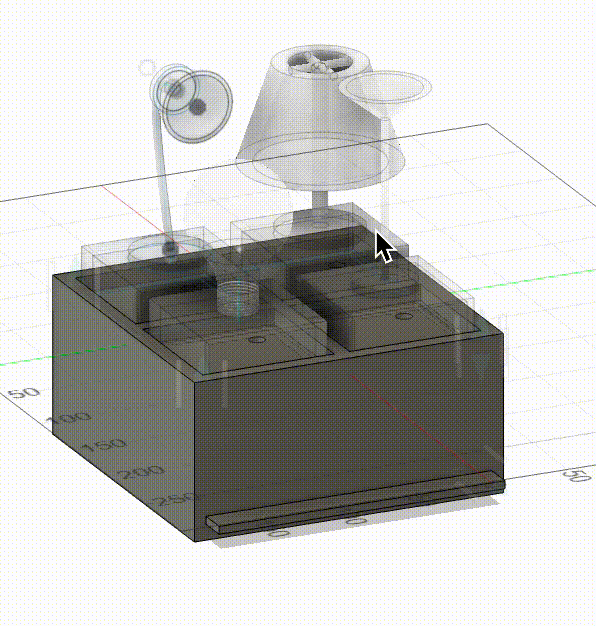

Part 1: 3D Printing
This week, we were tasked with designing and printing something that could not be created with subtractive methods. This meant something taking advantage of the more flexible material, or something with linkages (like chains). I originally wanted to created something with a knit/crochet-like pattern, but I didn't really feel equipped to figure this out, so I watched a couple of tutorials on how to CAD for 3D printing.
My final design was a bit basic, but it was a combination of two tutorials: one was a small gyroscope, and the other was a simple chain. I played around with the parameters for the chain so it would look better on the gyroscope and added a little anchor so that the chain could connect to the gyroscope. After exporting it to PrusaSlicer, I chose the flat face of the gyroscope to lay on the base--this just seemed really intuitive to minimize the amount of supports needed, and I mainly didn't want my chain links to be weak the "long" way (i.e. you could break the chain by pulling it apart). I chose to use organic supports, which was needed primarily for the chain links.
The entire print took 51 minutes, and I was pretty happy with how it turned out, but there was some imprecision which led to certain chain links fusing together--a little bit of digging ultimately loosened them up, and in future iterations I will be sure to give more space between separate components.
Part 2: Scanning
I also used the Revopoint to do my 3D scanning. I decided to scan a deer stuffed animal keychain that I keep on my fannypack (because it's cute). Somehow, on my first scan, it ended up with two heads-- I think this is because I was actually spinning the dolly too slow and my hands were pretty unsteady.
I readjusted the keyboard to be right in front of me so I could hit the start button without having to move around too much, and I also made sure to spin the dolly faster. My single first scan actually came out pretty good, but I did 3 other scans and merged them together (cleaning up each fusion before merging). I had a hard time getting the keychain part of the scan to turn out right, I think because the chain kept moving between scans. I thus had to rely on a single scan for that portion of the back.


Part 3: Final Project Update
3D Model
I spent the most time this week working on my final project model. I learned how to animate joints! And I also learned that I should default to using components more often.
For the main base box, I made little slots for each piece to sit. I also added some height to the box and hollowed it out so that there would be space for circuitry (in case it takes up a lot of space). To ensure access to this, I made the bottom of the box a slide-out drawer. This took forever for me to figure out how to animate, but once I got it, it made it a lot easier to animate the rest of the pieces. I next modeled each of the four pieces to look like little lamps (or a lightbulb).
 


This model is pretty final, but I have a couple of stretch goals which could slightly alter the design (discussed in the timeline).
Bill of materials
- Wood: The box can be made of wood (since apparently I'm really good at making boxes now)
- 3D print materials: I will likely 3D print each of the pieces
- Magnets: these will be used to complete the circuit whenever a piece is put on the light switch board (Bobby and I ran an experiment to ensure that sautering wires to magnets and then sticking magnets together still allowed current to flow)
- Assorted circuitry: will definitely need a microcontroller which can send RF signals to turn things on/off. I can breadboard this to start, but hopefully want to make this circuit pretty & small.
- 433MHz RF Smart Plug (I think): so I can hack the remote and safely have my arduino control plugged-in devices
Timeline
- By the end of week 6, I want to have created a switch by sautering wires to magnets; this should be hooked up directly to an LED (or some kind of output) controlled by an arduino.
- By the end of week 7, I want to extend this so that the arduino controls a set of LEDs depending on which magnets are attached (MVP).
- By week 9, I want to see if I can get this to work with the RF smart plugs; if so, then I should start to downsize/finalize my circuit.
- By week 10, the physical parts of the project should be complete & my iteration should be done
- All of the above might take longer than I expect, but if somehow I am on track and motivated, my stretch goal would be to make it so that pieces only turn on the light if they are in the correct slot. One way to do this could be to use voltage dividers, but I could also introduce physical pieces in the bases of pieces so they literally only fit in certain slots. Then to ensure modifiability, I would redesign the "lamp" designs on top of the pieces to be easily swappable. If my circuit is small enough, then I could additionally make the bottom of the base box a drawer to store the extra pieces.